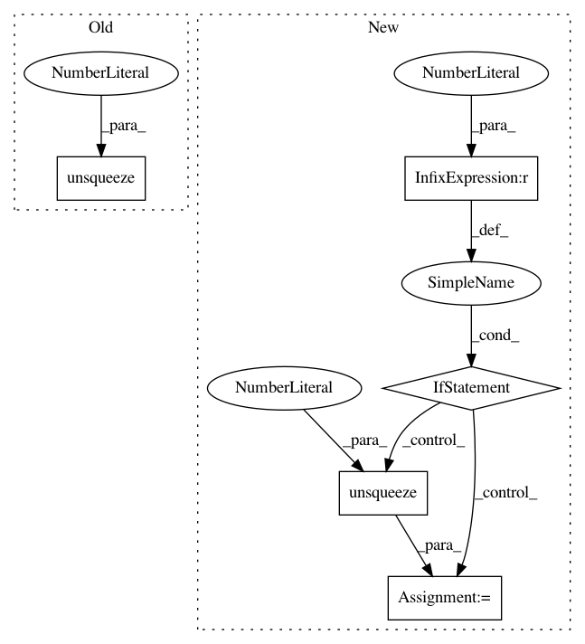

809d0e5b52561fefd3b0d98c08d3cbb175d7e706,onmt/modules/Util.py,LayerNorm,forward,#LayerNorm#Any#,35
Before Change
def forward(self, z):
if z.size(1) == 1:
return z
mu = torch.mean(z, dim=1).unsqueeze(1)
sigma = torch.std(z, dim=1).unsqueeze(1)
ln_out = (z - mu.expand_as(z)) / (sigma.expand_as(z) + self.eps)
ln_out = ln_out * self.a_2.expand_as(ln_out) \
+ self.b_2.expand_as(ln_out)
After Change
mu = torch.mean(z, dim=1)
sigma = torch.std(z, dim=1)
// HACK. PyTorch is changing behavior
if mu.dim() == 1:
mu = mu.unsqueeze(1)
sigma = sigma.unsqueeze(1)
ln_out = (z - mu.expand_as(z)) / (sigma.expand_as(z) + self.eps)
ln_out = ln_out.mul(self.a_2.expand_as(ln_out)) \
+ self.b_2.expand_as(ln_out)
return ln_out
In pattern: SUPERPATTERN
Frequency: 6
Non-data size: 5
Instances
Project Name: OpenNMT/OpenNMT-py
Commit Name: 809d0e5b52561fefd3b0d98c08d3cbb175d7e706
Time: 2017-07-04
Author: sasha.rush@gmail.com
File Name: onmt/modules/Util.py
Class Name: LayerNorm
Method Name: forward
Project Name: allenai/allennlp
Commit Name: c635bc4747b5ee5f14d7a31602010d4892e6e27e
Time: 2018-10-03
Author: markn@allenai.org
File Name: allennlp/modules/matrix_attention/bilinear_matrix_attention.py
Class Name: BilinearMatrixAttention
Method Name: forward
Project Name: pyprob/pyprob
Commit Name: e2dbb1def92ec8abeda98210e84a48b22636b958
Time: 2018-02-23
Author: atilimgunes.baydin@gmail.com
File Name: pyprob/distributions.py
Class Name: Categorical
Method Name: log_prob
Project Name: mozilla/TTS
Commit Name: 6cc464ead6c3b093fdf6546e32f3c0ad55ec9f4b
Time: 2020-11-12
Author: erogol@hotmail.com
File Name: TTS/vocoder/models/wavernn.py
Class Name: WaveRNN
Method Name: inference
Project Name: cornellius-gp/gpytorch
Commit Name: fa6163650ac882cf343f63f0cab852878342281e
Time: 2018-07-23
Author: gpleiss@gmail.com
File Name: gpytorch/kernels/index_kernel.py
Class Name: IndexKernel
Method Name: forward
Project Name: pytorch/fairseq
Commit Name: da9eaba12d82b9bfc1442f0e2c6fc1b895f4d35d
Time: 2021-02-18
Author: elizabeth.salesky@gmail.com
File Name: fairseq/data/audio/audio_utils.py
Class Name:
Method Name: _get_torchaudio_fbank